Handicaps can be very complicated, but fortunately Squabbit makes this easy for you. For the most part you don’t have to worry about handicaps at all — Squabbit will automatically keep track of your handicap after every round you post and has default settings for all the different games and formats.
However if you do want to adjust the handicap settings, Squabbit has an extremely flexible handicap system that can cater to almost every use case. Read on to find out how you can tailor the app to suit your needs.
A player’s handicap index is what is displayed on their profile and is used as an indication of that player’s playing ability.
There are three different ways to have your handicap index determined in the app. You can choose which option you would like to use by going to:
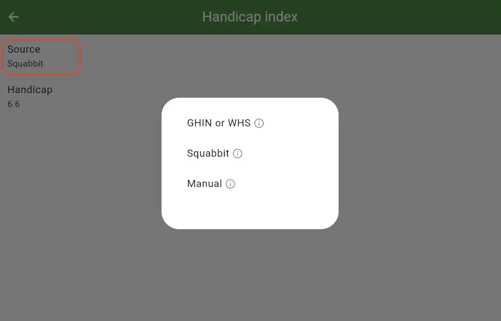
The first option is to automatically pull your latest handicap from the official handicap source for your country. To use this, your country must be supported in the app and you must have a registered account under your country’s official handicap provider (this is done outside of Squabbit). For example, in the USA, GHIN is the official handicap provider so you must have a registered GHIN account. If you choose this option, you will then be given the option to select your country and enter your account ID.
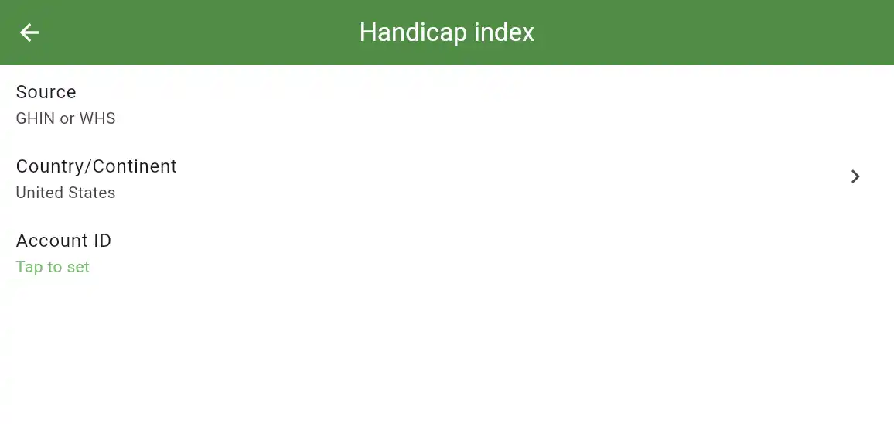
Once your account is linked, your official handicap will be refreshed every time you open the app.
There are several supported countries in the app, including the USA, Canada, Mexico and all of Africa. Some countries, like England and Australia, do not have public access to player handicap data and cannot be supported in Squabbit. If you would like your country to be added, please reach out to your country’s governing body to see if they have a public website or API that can be used.
The second option is to let Squabbit calculate your handicap index for you automatically. Every time you complete a round in Squabbit, it will automatically update your handicap index using the official WHS handicap index calculation.
If you are using Squabbit to calculate your handicap, you can tap the info icon beside the handicap index on any player’s profile to see a detailed breakdown of exactly how the handicap index was calculated, including which rounds were used in the calculation.
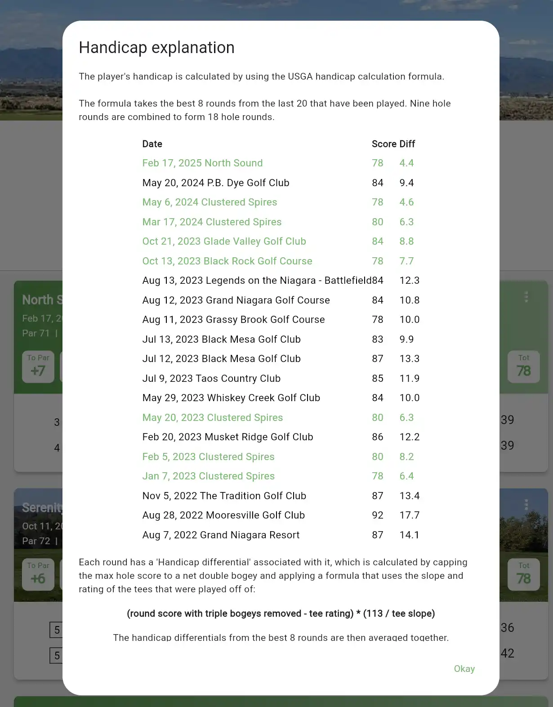
By default, most rounds you enter will be automatically counted towards your handicap index. The only exception is if you are playing in a format like Scramble or Alternate Shot where you do not play your own ball the whole round. These scores will not count towards your handicap index by default. Additionally, you can choose whether or not a round counts towards your handicap by tapping your name in the scorecard.
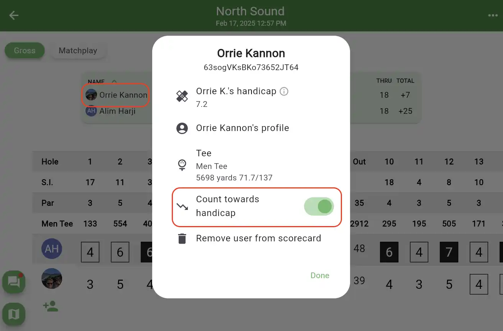
The third option is manually inputting your handicap index. This lets you choose whatever handicap you want and your handicap index will not change as rounds are posted. You can also edit your handicap index whenever you want.
If you are running a league, there are several different options you can use for each player’s handicap.
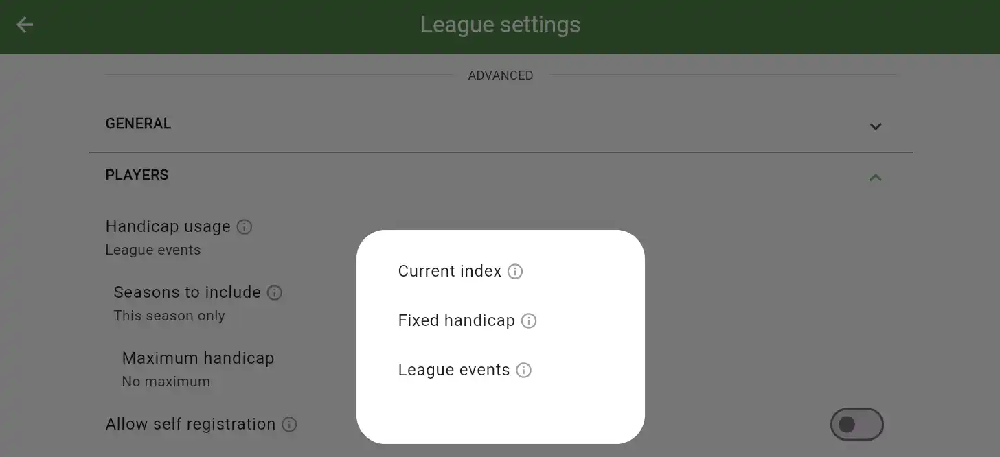
If Current Index is selected, then whenever you add a player to a league event, their current Handicap Index will be used for the event.
If Fixed Handicap is selected, then you can manually set each player’s League Handicap and it will not change unless you change it. When a player is added to a league event, their fixed handicap will be used.
If League Events is selected, then each player’s handicap will be automatically calculated using the WHS handicap formula but only using rounds they have completed in the league. If you have completed multiple seasons in your league, you can choose which seasons you want to include. After a player completes a round in a league event, their league handicap will automatically be updated and the updated handicap will be used in the next event.
When you add a player to a tournament or league event, their handicap index (the handicap displayed on their profile) is copied and added as a Tournament Handicap. This is displayed in the Players section of the tournament settings:
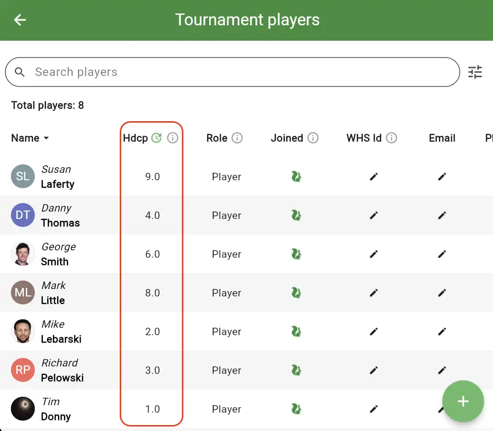
Normally the tournament handicap does not change for the duration of the tournament (however there are exceptions explained below). For example, let’s say Bob is added to a multi round tournament with a Handicap Index of 16. In round 1 of the tournament, Bob plays well and posts a score of 80. This lowers Bob’s Handicap Index to 15.8, however his Tournament Handicap does not change and the original handicap of 16 is used in round 2.
You can edit any player’s Tournament Handicap at any time. If you tap on an individual’s Tournament Handicap on the Players page you can either edit it manually or refresh it, which will pull their latest handicap from their Handicap Index. Alternatively, you can tap on the green refresh icon beside the Hdcp column header which will refresh all players’ handicaps. This is useful if you set up your tournament in advance and then want to pull in everyone’s latest Handicap Index right before the tournament starts.
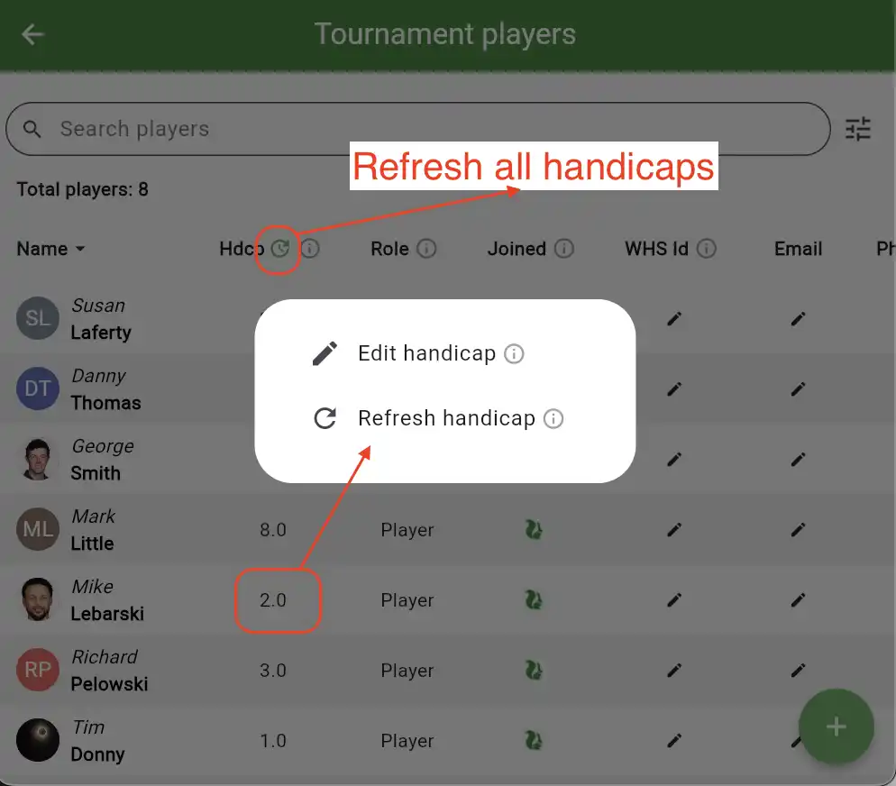
Tournament Round Handicaps let you override the Tournament Handicap for a player for a specific round in a multi round tournament. For example if Bob is added to a 3 day tournament with a handicap of 18 and you change his round 3 handicap to 12, then he will have a tournament handicap of 18 in round 1 and 2 and a tournament handicap of 12 in round 3. To set a tournament round handicap for a player:
Depending on what format or game you’re playing, there are several different ways of modifying each player’s handicap. Here is an example of some of the handicap modifiers in the app. Each row is explained below.
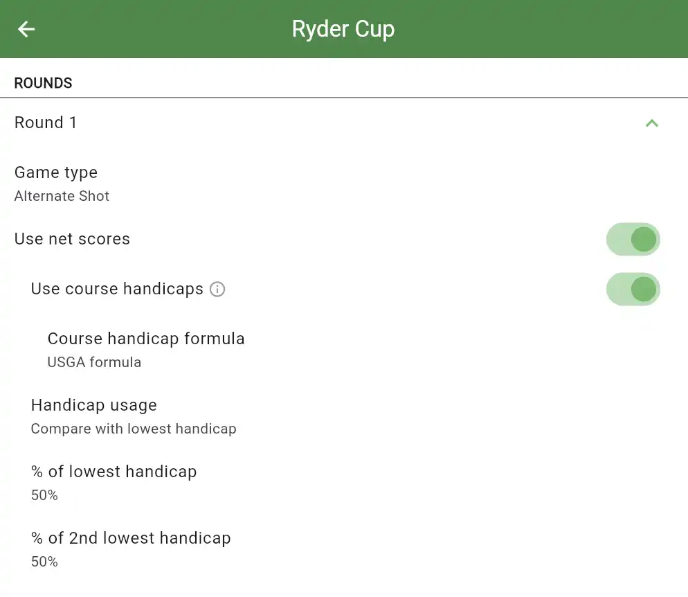
This toggle allows you to completely enable or disable handicaps. If ‘Use net scores’ is disabled, then handicaps will not be used and only gross scores will be used.
If this is enabled, each player’s handicap will be modified based on the difficulty of the slope, rating and par of the tee they are playing from. For example playing from a more difficult tee can increase the handicap.
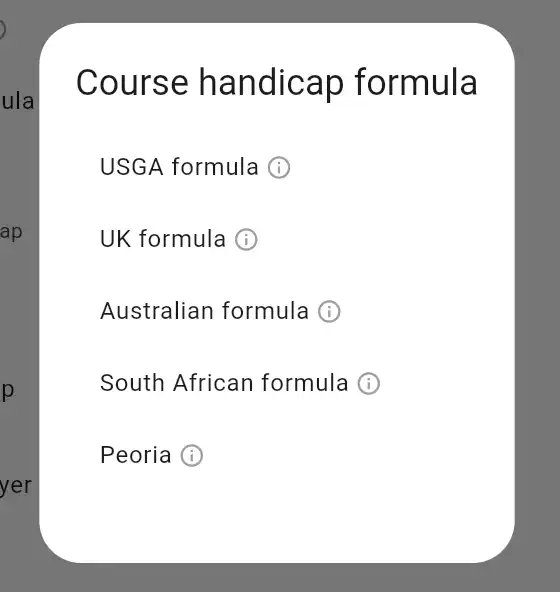
Different countries have different course handicap formulas. This lets you choose which formula you want to use. You can also elect to use Peoria here which is a special handicap formula where you choose which holes you want to use to calculate each player’s handicap.
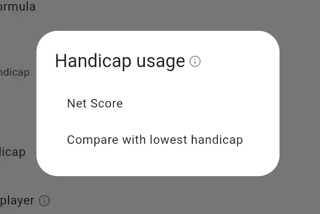
This lets you choose Net Score or Compare With Lowest. Net Score does not alter the handicap whereas Compare With Lowest will stroke off the lowest score in the group. In other words, the lowest handicap in the group will be subtracted from everyone else’s handicap.
For example, let’s say you’re playing in a 2 vs 2 best ball matchplay event with four players:
This allows you to only take a certain percentage of each player’s handicap. For example if you want to only use 80% of each player’s handicap in the final round of a tournament. Or if you’re playing a team game like Scramble where the team handicap is calculated using the sum of each player’s handicap, you can choose which percentage of each player’s handicap is used in the team total handicap.
The playing handicap is what you are left with after applying all of the modifications described above and then rounding the results. The Playing Handicap is also equivalent to the number of strokes a player receives.
Since the calculations can be quite complicated, Squabbit provides a way of seeing a detailed breakdown of every step of the playing handicap calculation by tapping a player’s PH cell in a tournament round leaderboard or by tapping the info icon beside their handicap on a scorecard.
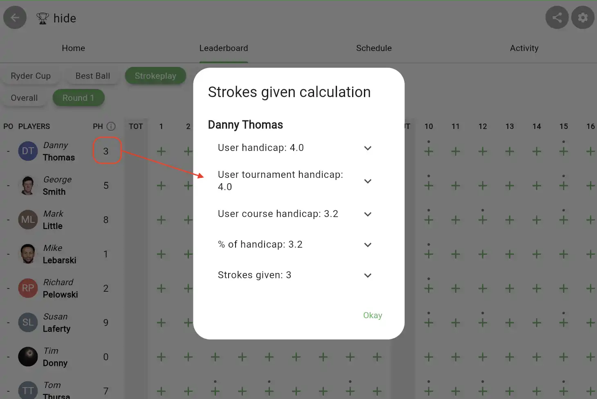
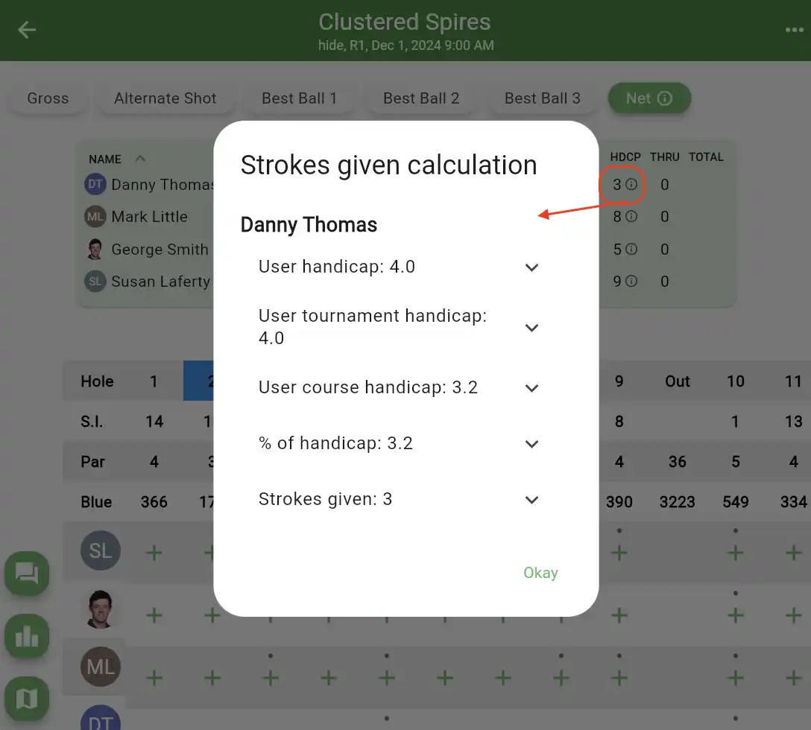